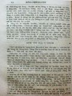
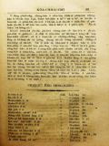
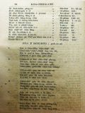

Languages
台文
｜
中文
｜
日本語
｜
English
字體
小
｜
中
｜
大
首頁
/
白話字數位典藏
白話字數位典藏全文檢索
查詢模式
選擇年代
清國時代(1885-1895)
日本時代(1895-1945)
戰後(1945-1969)
1885-1895
1896-1905
1906-1915
1916-1925
1926-1935
1936-1945
1946-1955
1956-1965
1966-1969
1970-1980
1980-1990
1990-2000
2000-2010
2010-
選擇文類
詩
散文
小說
戲劇
傳記
選擇作者
陳清忠
陳清義
編輯部
柯設偕
吳天命
明有德
偕叡廉
周天來
劉華義
王守勇
林茂生
陳添旺
王占魁
柯維思
賴仁聲
陳瓊琚
雪峰逸嵐
吳清鎰
郭水龍
蕭樂善
許水露
葉金木
陳金然
章王由
廖得
鄭連坤
潘道榮
楊士養
梁秀德
劉約翰
周淑慧
高金聲
林燕臣
黃六點
蔡愛義
許有才
主筆
巴克禮
陳鳩水
郭朝成
張基全
陳明清
陳能通
拾穗生
顏振聲
卓恆利
傳道局
胡文池
劉主安
鄭兒玉
鄭溪泮
潘文才
吳牧師娘
楊世註
盧樹河
潘勝輝
陳旺
Google Search
Yahoo Search
全部
刊名
標題
標題(教羅)
全文
全文(教羅)
作者
第82頁，共93頁(共1,848筆資料) 0.67594385147095sec
1
...
80
81
82
83
84
...
93
To Page
GO
文字列表
圖文列表
排序
日期
文類
刊名
作者
影像
[1926-5 芥菜子 文類-小說 作者-陳清義/Tân Chheng-gī]
(2)
一滴一滴的水 [ Chi̍t tih chi̍t tih ê chuí ]
「一滴一滴的水」 (紲接以前) (7) 神佮車夫 有一个人駛一隻馬車，載真濟物，經過爛溝糜的細條路；因為車輪牢土糜。，所以馬拖攏袂進前。 為著按呢，這个人。全然無勞碌，隨時跪落佇土糜頂，大聲hiu神來幫贊。 神就應講，「貧惰的人ah，將你的肩頭掛佇車輪，出力照所會來sak，按呢iáu-kú若著欠用我的幫贊，我就歡喜聽lah ！著會記得彼句俗語講，「天幫贊自助的人。」 教示 常常聽見人teh祈禱的時，所求佮這款siâng類--的不止濟。「爸ah，你的福音到台灣已經五十外年久lah！但是來信你的人是真少。求你著將你的神開啟 in 的心，予in緊緊來佮阮相佮行這條天的路，通來得...
[1925-7 芥菜子 文類-詩 作者-鄭溪泮/Tēⁿ Ke-phòan]
(2)
芥菜子Ê陰蔭 [ KOÀ-CHHÀI CHÍ Ê ÌM-ŃG ]
芥菜子Ê陰蔭 (Riverain Tee作)
[1925-7 芥菜子 文類-詩 作者-陳清忠/Tân Chheng-tiong ]
(2)
力間（海龍王） [ LE̍K-KAN (HÁI-LÊNG-ÔNG) ]
力間（海龍王） 佇一个熱天力間坐佇Ba-tek-海ê石磐，吟伊一生悲傷ê歌，用所giâ ê琴來彈。 青翠ê海湧，溢來溢去佇伊坐
[1925-7 芥菜子 文類-散文 作者-潘文才/Phoaⁿ Bûn-châi]
(2)
教會Ê牌匾 [ KÀU-HOĒ Ê PÂI-PIÁN ]
教會Ê牌匾 人若看某生理店真鬧熱，真有生理，大趁錢，對按呢ná開ná大間，續成做商行；就kā伊想怎樣會按呢，的確有3項ê因端：(1)物件真，(2)價數實在，(3)頭家好，薪勞盡忠。Koh有某店頭怎樣靜悄悄，無生理，袂趁錢，這ná thang想有3項：
[1925-7 芥菜子 文類-散文 作者-蕭樂善/Siau Lo̍k-siān]
(2)
著贏少年人 [ TIO̍H IÂN SIÀU-LIÂN-LÂNG ]
著贏少年人 濟濟ê少年人不止贊成基督教，也濟濟親像信者，也若毋是nih。Beh引chhōa這款
[1925-7 芥菜子 文類-散文 作者-偕叡廉/Kai Jōe-liâm]
(2)
萬世代 [ BĀN-SÈ-TĀI ]
萬世代 佇這幾年中間科學直直teh進步。電燈電報、
[1925-7 芥菜子 文類-散文 作者-吳牧師娘/Gô͘ Bo̍k-su-niû]
(2)
教示小兒ー積成在佇家庭 [ KÀ-SĪ SIÁU-JÎーCHEK-SÊNG CHĀI TĪ KA-TÊNG ]
教示小兒 積成在佇家庭
[1925-7 芥菜子 文類-散文 作者-楊世註/Iûⁿ Sè-chù]
(2)
迷信Ê故事 [ BÊ-SÌN Ê KÒ͘-SŪ ]
迷信Ê故事 佇歸仁北ê地方，「吳樂、徐炭」。大家攏知是笑詼迷信。這个流傳已經真久，就是清朝
[1925-7 芥菜子 文類-散文 作者-盧樹河/Lô͘ Chhiū-hô]
(2)
時間 [ SÎ-KAN ]
時間 論時間ê價值，已經成做俗語，－「時間就是錢？」按呢講：是因為若用時間就會得著錢ê因端。總是毋若按呢。時間是智識。Koh
[1925-7 芥菜子 文類-散文 作者-雪峰逸嵐/Soat-hong Iat-lâm]
(2)
論白賊 [ LŪN PE̍H-CHHA̍T ]
論白賊 前月鄙人有寫一篇故事佇囡仔新聞，後來一位ê朋友，笑笑問我講：恁教示囡仔，毋thang講白賊，你反轉家己講白賊，佇叼位捌看著玉珠會變色到親像土，koh beh爆裂。我聽了真趣味，續愛笑，koh 予我生起ài研究ê心；就佇零星ê時間常常想白賊是按怎。後來對這句話來想你教示囡仔毋thang講（真實ê）白賊，反轉家己講（假影ê）白賊。按呢我就想出 (1)真正ê白賊，(2) 假影ê白賊所以簡簡記幾句來談論。 1. 真正ê白賊：－ 就是，ài害人&ecir...
[1925-7 芥菜子 文類-散文 作者-潘勝輝/Phoaⁿ Sèng-hui]
(2)
阿非利加洲Ê老父 [ A-HUI-LĪ-KA-CHIU Ê LĀU-PĒ ]
阿非利加洲Ê老父 「勤勤做工敬畏上帝。」這句就是阿非利加ê老父大衛李閔斯頓（按：David Livingstone，現翻作李文斯頓）刣贏高貴ê戰鬥所擒稠不滅ê金銀。沐沐茫茫宇宙ê萬相，宛然看見無次序，總是無論行到叼位to會得thang看見上帝ê攝理。干但烏暗不靈ê人類眼中常常袂判斷真假。 東半求ê西爿有一個三角形ê大陸，kiám毋是阿非利加洲mah？當19世紀到20世紀，物質ê文明發達thang講到佇極點；亂用文化ê理氣重黃金、chio...
[1925-7 芥菜子 文類-散文 作者-陳清義/Tân Chheng-gī]
(2)
東台灣Ê故典 [ TANG TÂI-OÂN Ê KÒ͘-TIÁN ]
東台灣Ê故典 佇教會內欲揀人當職，著真細膩。會友若有囝兒欲號名，也著真斟酌。這擺我kap郭希信、郭水龍、鐘天枝3位牧師去花蓮港赴奮興會，有聽著幾若項ê故典，不止心適；taⁿ來寫佇下底報予大家知影。 1. 王長老抽籤。佇某所在有一個長老姓王，伊ê家內有拄著破病，食藥、祈禱攏袂好；就去宮廟欲抽籤。有某傳道師知影就去問伊，「你kiám毋是王長老？」「是lah，我是bóng抽若定，我to無信。」 2. 偕牧師做小使。有一個姓偕，伊ê名號做牧師teh kā人提物，做小使。有一日，一个人teh問伊&ec...
[1925-7 芥菜子 文類-選擇文類 作者-編輯部/Phian-chip-pō͘͘]
(2)
募集第二號Ê原稿 [ BŌ͘-CHI̍P TĒ-JĪ HŌ Ê GOÂN-KÓ ]
募集第二號Ê原稿 期間-------8月25日止請寄對下面所記ê住所來。 ...

[1925-10 芥菜子 文類-散文 作者-陳清忠/Tân Chheng-tiong ]
(2)
袂得赦ê罪 [ BOĒ TIT SIÀ Ê CHOĒ ]
袂得赦Ê罪 「見若講話攻擊人子ê，欲赦免伊；獨獨見若講話攻擊聖神ê，不論今世來世無欲赦免伊。」馬太12章32節。這節所講是teh指啥物款ê罪，也著怎樣來解說？咱大家若患著這款永死永滅ê罪過，萬事盡休，的確會得thang閃避絕望kap悲感。所以這句咱袂免得著斟酌來研究，靜靜來深想；因為是真要緊ê問題。咱有信對佇反悔kap信仰會得著罪赦，也有信或是佇今世á是無論佇來世有這款永袂赦ê罪－咱真驚－彼个罪就是謗瀆聖神ê罪。今仔日佇咱ê中間有濟濟ê基督徒，信in若使領受洗禮就會得...

[1925-10 芥菜子 文類-選擇文類 作者--/-]
(2)
怎樣用聖經 [ CHÁI-IŪN ĒNG SÈNG-KENG ]
怎樣用聖經 憂悶ê時 讀 約翰14: 失志ê時 " 詩篇27: 犯罪ê時 " 詩篇51: 煩惱ê時 " 馬太6: 19-34. 危險ê時 " 詩篇91: 受逼ê時

[1925-10 芥菜子 文類-詩 作者--/-]
(2)
我Ê花園（白話詩） [ GOÁ Ê HOE-HN̂G (pe̍h-oē-si) ]
我Ê花園（白話詩） 1. 我ê花園真正媠，草木青翠花大蕊，亦有山仔kap涼亭，清ê埤仔kap pûn水。 2. 樹眉ē花真正芳，牡丹、茶花真正紅，百合、茉莉色真白，含笑、玉蘭真大叢。 3. 春天我來遮行遊，O-ia̍h會kóe心憂愁，夏天我來遮休憩，規陣ê蟬叫lè-lè。 4. 秋天我來遮散步，火金姑點燈chhōa路；冬天我來遮觀景，雖然酸風也袂冷。 5. 我若身軀有厭siān,蜜蜂送蜜真利便，我若心神有煩惱，媠花安慰真拄好。 6. 柑桔、桃李，kap蘋...
[1925-10 芥菜子 文類-散文 作者-陳旺/Tân Ōng]
(2)
信用kap道德 [ SÌN-ĒNG KAP TŌ-TEK ]
信用KAP道德 這2句話人不時teh講：續掠做平常話；其實是包天包地、包山、包海，講也盡；也是親像人ê腳手，若無平平，講是長短跛腳、跛手。按呢算是無完全ê人，真歹看，想倒轉著替伊可憐，kiám-chhái是父母生成；調查詳細，毋是，父母真完全；來kā伊研究，總無是天性；毋過天性to是純全--ê，ai-ah！按呢thang 判決自作孽、不受教，無冤枉lah！ 道德是地基，信用著合宜、合時來用。前年新聞有講3句話：－大信用，大死；小信用，小死；攏無信用，攏無死－其實有影，今年ê事若定。遐个失敗者kap受關監&e...
[1925-10 芥菜子 文類-散文 作者-陳清忠/Tân Chheng-tiong ]
(2)
死神 [ SÍ SÎN ]
死神 下面所記ê，就是英國ê大詩人Geoffray Chaucer (1340-1400)所寫ê詩〈The Canterbury Tales〉ê中間ê一个故事。佇Canterbury ê所在有這个神社叫做St. Thomas，常常有濟濟巡禮ê人去遐參拜。大家佇路中相kap行，無聊，就相替講故事來安慰女眾。這个故事猶原是遐个巡禮者中ê一個所講--ê。 讀這个故事，ǹg望咱會得著多少ê教示。有三個少年人，一暗坐佇酒店teh博賭，聽見有鐘ê聲，就伸in &e...
[1926-9 芥菜子 文類-散文 作者-明有德/Bêng Iú-tek]
(2)
活水 [ oa̍h-chuí ]
活水 有一日佇淡水中學的聖經研究會，阮有teh研究這chām約翰福音傳，第三章五節，到十四節。Ná佮學生斟酌想的時，ná看有照下面所寫的意思佇teh。 一个學生講，佇這chām有淡薄親像孔子的教示佇teh，有別个學生問講，孔子教示若是親像耶穌--怎樣西洋人將耶穌的教示，傳入東洋？這个學生問了，阮saⁿ-kap想這句是tú-tú親像新約的內面所記載彼个撒瑪利亞的婦人人問耶穌一樣。彼時無tú-tú照伊所問來應。拍算耶穌的意思毋是掠教示做要緊，這个不過是teh 幫贊予活命通較發達。 今欲拆明彼个意思予大家聽：－ 「耶穌的朋友離開西洋來到東洋著對中國經過。對按呢到中國一...
[1926-9 芥菜子 文類-散文 作者-雪峰逸嵐/Soat-hong Iat-lâm]
(2)
好歹境遇攏有利益 [ Hó-pháiⁿ kéng-gū Lóng ū lī-ek ]
好歹境遇攏有利益 佇美國起頭欲傳道佇食人島的時，是真為難，因為所有去到遐的宣教師，攏無性命通閣倒轉--來，是予遐的青蕃thâi去食；有一个少年人，奮志決心欲傳教佇彼个海嶼，就出力勉強入神學。佇欲卒業神學的一年前，有一日，為著坐電車無拄好，致到兩枝跤攏去予電車kauh-chi̍h--去。可憐這个強壯的青年，一旦變破相無跤的人，伊的親戚朋友替伊真毋甘；總是青年人的心，家己真安慰，佇病床--裡，猶原teh勉強伊的課程，後來傷好，就鬥樹奶跤入學校。到卒業試驗，猶原第一名，親戚朋友真呵咾，也勸伊莫得去食人島傳教，著去別位。總是伊毋聽，講已經佮上帝約束 lah，伊對宣道會討欲去，會--裡的人看著伊的熱...
第82頁，共93頁(共1,848筆資料)
1
...
80
81
82
83
84
...
93
To Page
GO
數位典藏國家型科技計劃
拓展台灣數位典藏計畫
版權所有 國立台灣師範大學 台灣文化及語言文學研究所©2008
10610 台北市和平東路一段162號│TEL 02-7734-5516│Fax 02-2358-2461
計劃簡介
典藏特色
執行架構
計畫典藏數位化流程
成員介紹
台灣白話字發展簡介
巴克禮牧師與《台灣教會公報》
廈門話字典-杜嘉德
白話字教學-打馬字
中國南方白話字發展
台灣基督教長老教會簡表
台灣基督教長老教會教會歷史委員會
《北部台灣基督長老教會教會ê歷史》
關於陳清忠
白話字文學：台灣文學的早春